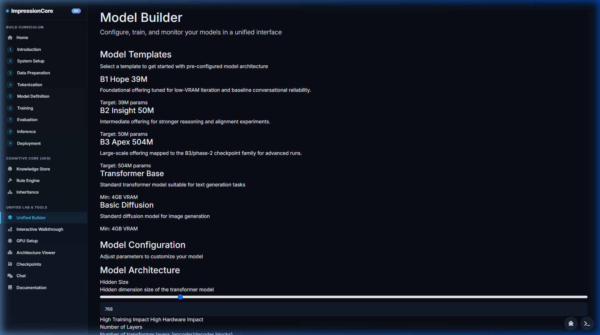
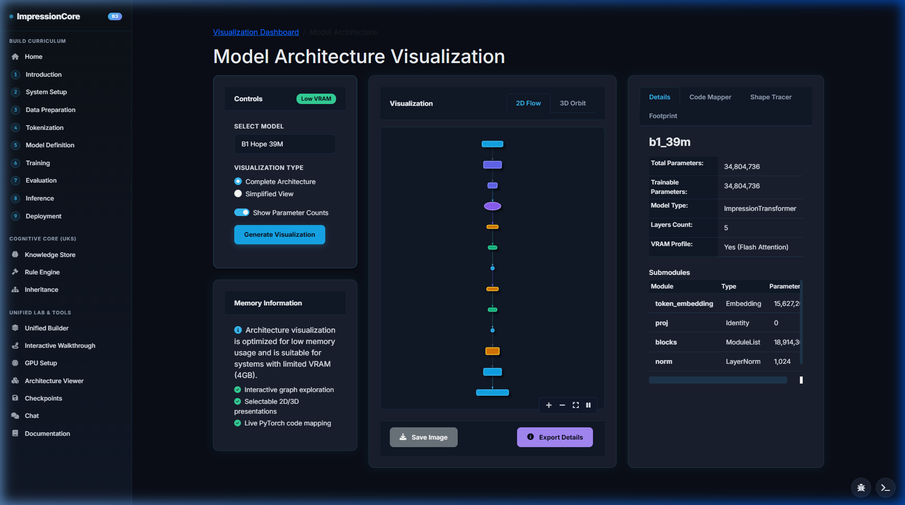
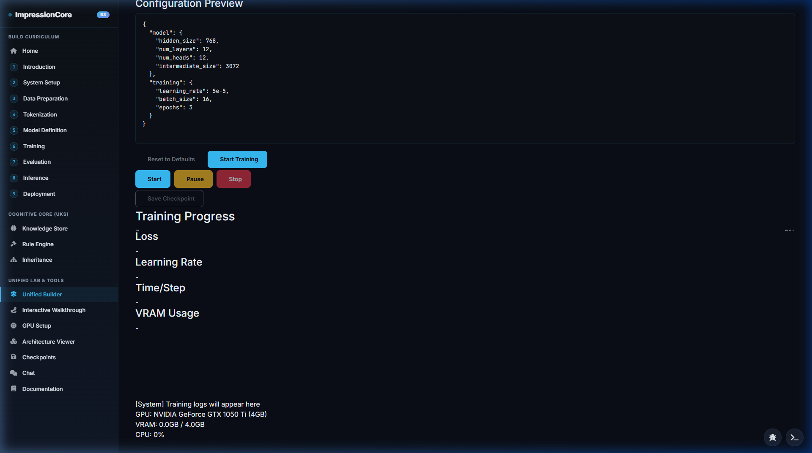
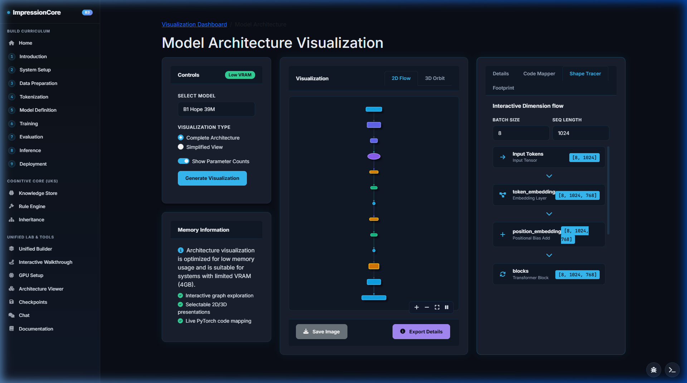
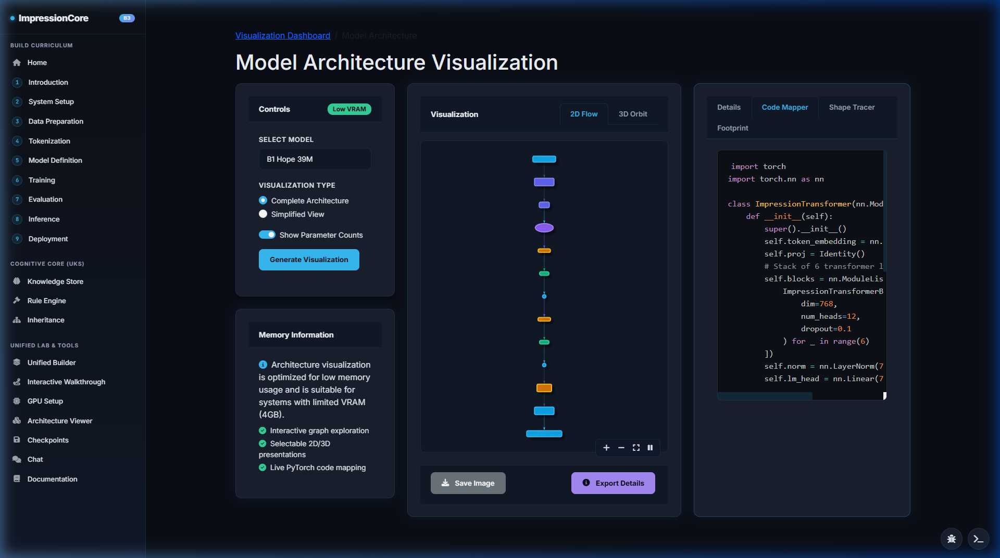
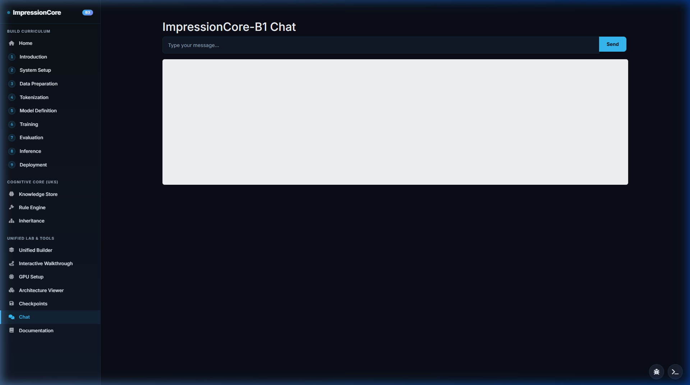
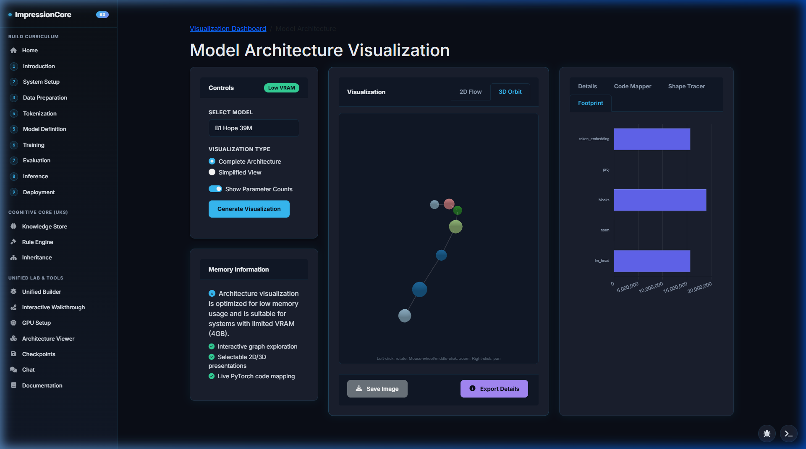

Unified Web Model Builder & Live Visualizer Suite
ImpressionCore adheres to Directive 4: Strict Architectural Separation. The Model Builder operates as an independent, high-performance Flask & WebGL environment on Port 5000, orchestrating the entire 10-step AI lifecycle before export to the Port 8000 production runtime.

The 10-Step Training & Distillation Pipeline
A comprehensive, verifiable end-to-end workflow taking raw data from preflight verification to quantized edge deployment.
GPU Preflight & Capability Audit
Automatically interrogates system hardware: CUDA capability, compute architecture (Pascal, Ampere, Ada Lovelace), VRAM headroom, and PyTorch environment health. Guarantees operations strictly adhere to the <4GB memory budget.
Step 02 • Data PipelineStreaming Ingestion & Validation
Loads multi-format training sets (JSONL, raw text corpora, audio features, visual embedding grids) with streaming chunk validation and SHA-256 dataset hashing.


Domain-Adapted BPE Tokenizer
Configures custom Byte-Pair Encoding tokenizers with domain-adapted vocabulary tables (50,257 tokens), special token injection, and sub-word compression profiling.
Step 04 • Architecture ConfigAutomated Preset Population
Select any canonical tier (`B1 Hope`, `B2 Insight`, `B3 Apex`, `B3 Ultra`) to instantly populate hidden layers, dimension size, attention heads, and optimizer parameters with live hardware headroom bars.
Teacher-Student Knowledge Distillation
Distills heavy teacher models (DialoGPT-medium, Qwen2.5) into compact student weights via Kullback-Leibler (KL) divergence and feature representation matching.
Step 06 • Loss & AnnealingCosine Annealing & Loss Telemetry
Real-time monitoring of AdamW optimization, Cosine Annealing learning rate schedules, gradient norm clipping, and loss convergence curves.

Checkpoint Browser
Automated background checkpointing with SHA-256 cryptographic integrity hashes for non-repudiation logging.
Evaluation Audit
Validation against the 10/10 conversational benchmark, perplexity testing, and epistemic uncertainty checks.
GGUF Quantization
One-click export to quantized formats (`Q4_K_M`, `Q8_0`, `FP16`) for instant llama.cpp edge execution.
Production Serving
Zero-copy model handoff to the FastAPI/Vite runtime on Port 8000 with real-time health telemetry.
Deep Model Introspection & Real-Time Inspection
The Port 5000 builder provides unmatched visibility into neural activations, tensor shapes, and underlying PyTorch source code.

Tensor Shape Tracer
Traces multi-dimensional tensor activations across every attention head, latent projection, and FFN layer to eliminate shape mismatches before initiating long training runs.

Live PyTorch Code Mapper
Dynamically translates selected visual layers, attention parameters, and optimizer settings into production-ready PyTorch modules following the Clean Code directive.

Live Model Assistant
Embedded conversational assistant for querying training loss patterns, tuning hyperparameters, and debugging architecture bottlenecks interactively.

3D Neural Architecture Orbit
Interactive 3D WebGL node graph visualizing layer depth, attention connections, and tensor routing across the neural manifold.
Launching the Builder Studio Locally
Get the full Port 5000 Unified Web Builder running on your local machine with automated preflight checks in seconds.
# 1. Launch System A: Unified Model Builder Studio (Port 5000) launch_builder.bat # Or via Python directly: python src/interfaces/web/server.py --port 5000 # 2. Automated End-to-End Builder Verification (All 9 functions tested) python src/dev_tools/exercise_builder_site.py